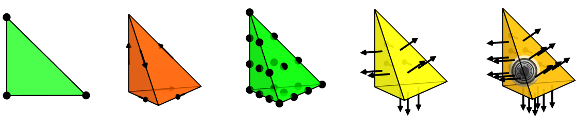
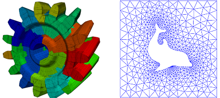
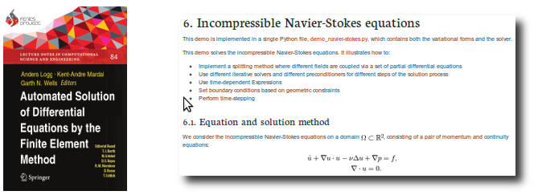

FEniCS comes packed with features for the computational scientist. Partial differential equations can be specified in near-mathematical notation (as finite element variational problems) and solved automatically. FEniCS also provides a large library of important tools for the numerial analyst who wishes to explore and develop new methods.
Finite element variational problems may be specified in near-mathematical notation directly as part of your program. For example, the variational problem for the Poisson equation,
can be directly translated to the following FEniCS program:
u = TrialFunction(V)
v = TestFunction(V)
a = dot(grad(u), grad(v))*dx
L = f*v*dx
Variational problems like the one above may be solved automatically in FEniCS by calling the solve() function:
u = Function(V)
solve(a == L, u, bc)
Automated solution of variational problems is not limited to linear problems. FEniCS also supports general nonlinear variational problems:
The solution is automatically computed by Newton’s method through automatic differentiation:
solve(F == 0, u, bc)
Say you want to solve the above problem adaptively with automated control of the error in the computed solution... No problem, just specify a goal functional \(\mathcal{M} : V \rightarrow \mathbb{R}\) (a global scalar functional of your computed solution) and a tolerance \(\epsilon > 0\):
solve(F == 0, u, bc, tol=epsilon, M=M)
FEniCS provides an extensive library of finite elements. You will find the standard Lagrange elements, but also support for DG methods, vector elements like the BDM, RT and Nedelec elements, and special element types like the Crouzeix-Raviart element.
FEniCS provides unified access to a range of linear algebra libraries through a common wrapper layer. Currently supported linear algebra backends include PETSc, Trilinos/Epetra, uBLAS and MTL4. The backend may be easily switched by changing the value of a parameter. Parallel computing is supported through the PETSc and Epetra backends.
FEniCS provides fully distributed simplex meshes in one (intervals), two (triangles) and three (tetrahedra) space dimensions. Mesh data may be easily accessed through mesh iterators. Meshes may be refined adaptively, and mesh partitioning for parallel computing is supported through interfaces to SCOTCH and ParMETIS.
FEniCS provides built-in plotting for quick and easy inspection of solutions and meshes. Just call the plot() command for live plotting of your data:
plot(mesh)
plot(u)
You can even plot derived quantities like the gradient of a function:
plot(grad(u))
For more advanced postprocessing, FEniCS provides easy output in VTK format for visualization in ParaView or MayaVi.
FEniCS can be used from both Python and C++. The two interaces are very similar and provide the same features (with some small exceptions). Which interface to choose is a matter of taste, but the Python interface is easier to work with if you are not already a seasoned C++ programmer.
FEniCS comes with extensive documentation, consisting of a comprehensive tutorial, detailed API documentation and a range of documented demos. In addition, the 700-page FEniCS book documents the methodology behind the FEniCS Project and highlights a number of applications in computational science based on FEniCS.
Ease of installation is a high priority for FEniCS. We offer prebuilt binaries for GNU/Linux (Debian and Ubuntu), Mac OS X and Windows, as well as an automated installation script for other platforms.